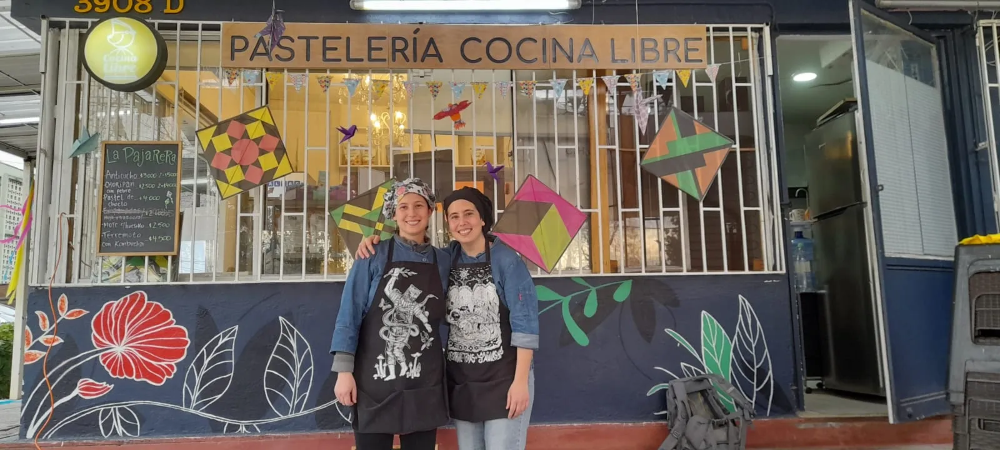
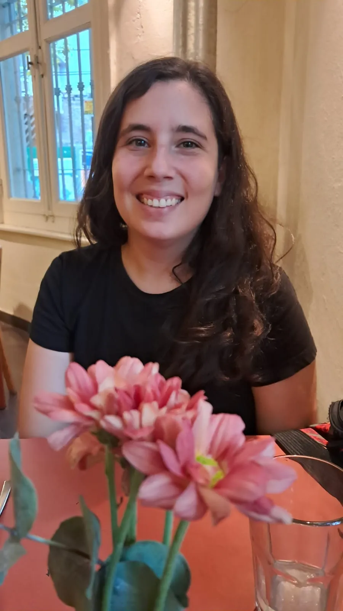
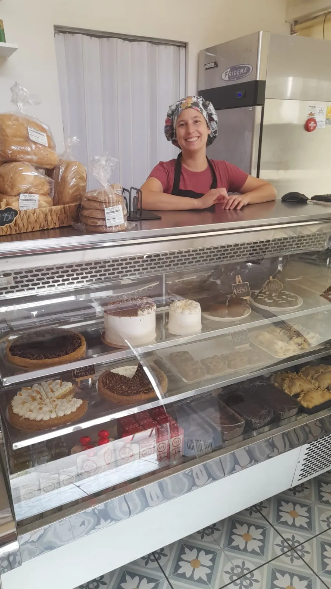
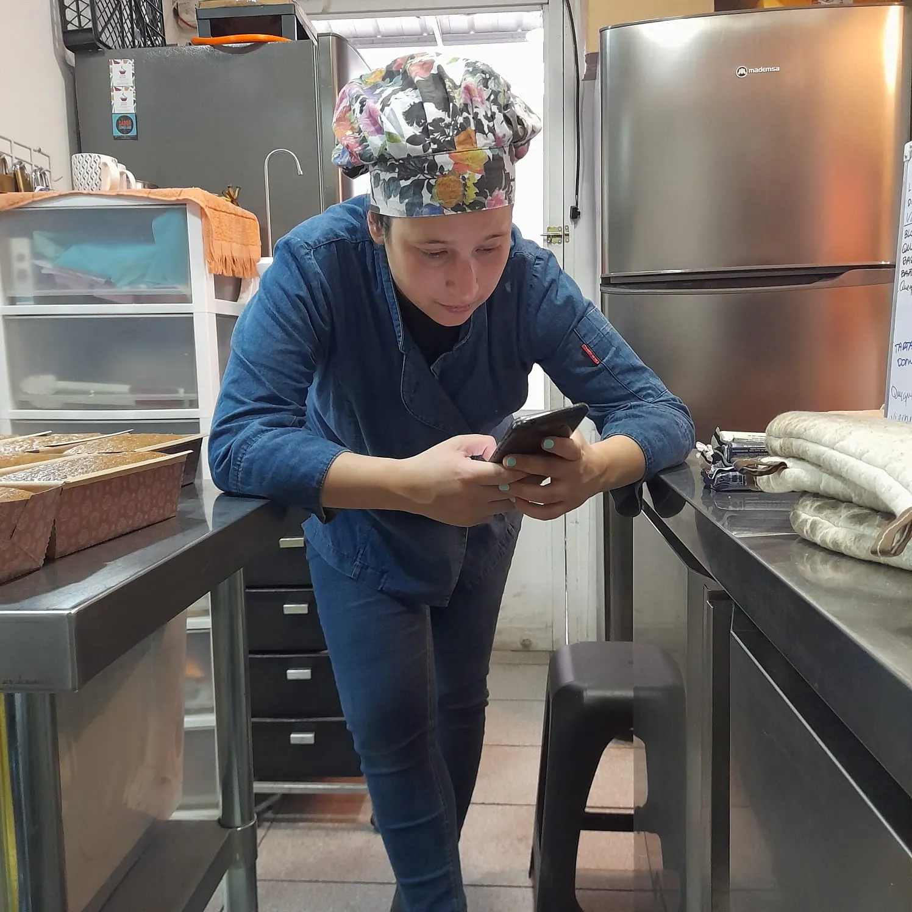
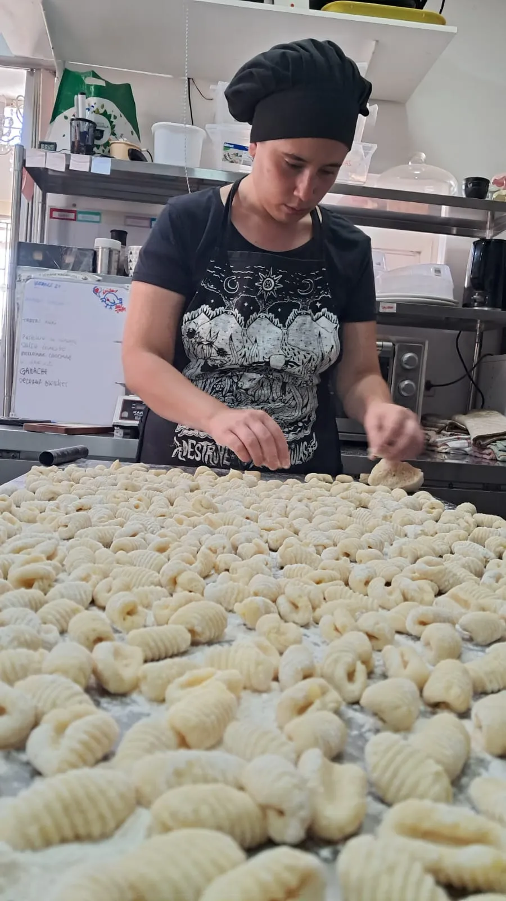
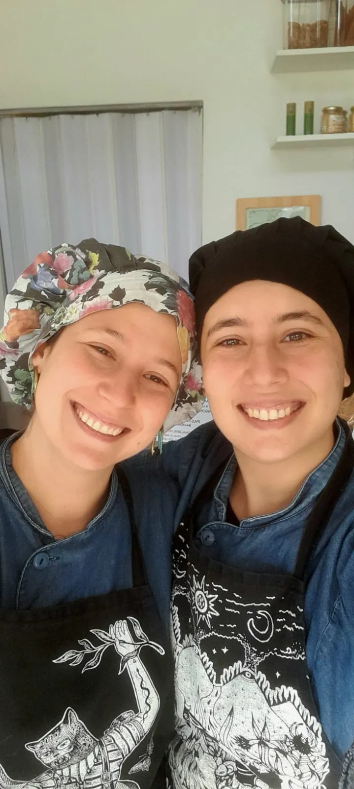

Sobre nosotras
Dos chilenas, una cocina libre de todo menos de cariño.
Somos dos hermanas con un sueño...

Gigi Marrazzo y Dani Marrazzo, fundadoras de Cocina Libre.
.jpeg)
Gigi Marrazzo
Pastelera, diseñadora y artista
Además de cocinar, soy quien está detrás de todas las cositas de madera que ven en nuestro local. Las tablas de roble y lenga, las casitas de pájaro y el cuadro Conversaciones entre Mirlos y cabezas. Pueden ver más de lo que hago en quiltru.cl 🤭

Dani Marrazzo
Pastelera
A mí me verán todos los días en el local, ya sea atendiendo o adentro produciendo los pastelitos. Además de cocinar, soy quien está detrás del Instagram y WhatsApp respondiendo los mensajes y tomando sus pedidos.
Nuestra historia
Hace 9 años iniciamos este viaje en La Florida, con un horno en el patio de la casa de nuestra mamá. Nos embarcamos en el mundo de la repostería vegana y probamos muchas recetas. Sostuvimos el emprendimiento informal durante la pandemia, trabajamos empleadas en trabajos paralelos y hace 4 años nos atrevimos a abrir las puertas de nuestra querida pastelería y tienda vegana en Macul, un pequeño espacio de resistencia donde soñamos y trabajamos por la libertad de todas las especies.
Gracias al cariño y al apañe de quienes nos encargan dulcecitos todos los días, a nuestras amigas, amigos y familiares que nos encargan desde nuestros inicios —y sufrieron las consecuencias de la inexperiencia— y a quienes se han ido sumando en el camino, vecinas, vecinos y pura gente buena onda, es que nos llenamos de energía para seguir dando vida a Cocina Libre, hacer con toda dedicación y cariño cada preparación y sostener la idea de que el presente es vegano ✊️💚
Así es nuestro día a día

Nuestra vitrina, todos los días con productos frescos.

Nuestra cocina, donde probamos nuevas recetas.

Dani preparando gnocchis a mano 🤌, todo casero y artesanal.
Lo que nos mueve
- El bienestar animal. Todo es 100% vegano. Sólo ingredientes de origen vegetal. Sin lácteos, sin huevo, sin mantequilla.
- Lo artesanal. Recetas propias, ajustadas con tiempo y cariño, dando espacio también a pedidos especiales y personalizados. Cada torta se prepara pensando en quien la va a recibir.
- Nuestro amor por las aves. Nos inspiramos en la naturaleza chilena. Todas nuestras tortas tienen nombres de aves de Chile que pensamos según sus colores. Chucao, Chiricoca, Caití, Garza, Pequén y Parrot cake son las favoritas.

Lo que dicen de nosotras
Lo que dicen en Google
Horario de atención
| Martes a viernes | 15:00 – 19:30 |
| Sábado | 11:00 – 19:30 |
| Domingo | 11:00 – 15:00 |
| Lunes | Cerrado |
Dónde estamos
Arturo Gordon 3908, local D, Macul, Región Metropolitana.
¿Quieres contactarnos?
Escríbenos directo por WhatsApp y conversamos tu pedido.
+56 9 3251 4475